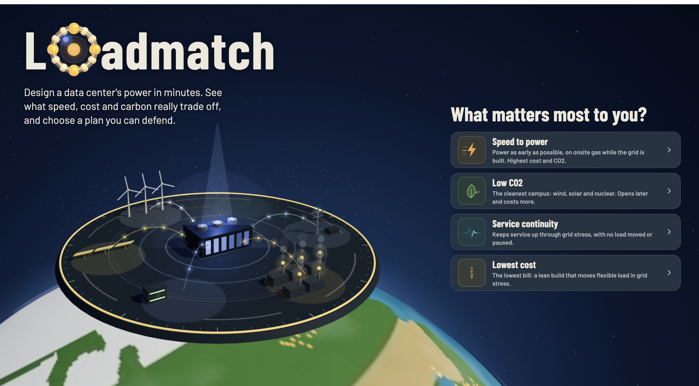

Loadmatch: runner-up at the GridTech Hackathon
Energy Symposium GridTech Hackathon · Columbia Energy Association · 2026 · with Kiran Lakshmisha, Leah Ndumi Kioko and Mohak Sharma
The challenge: power a 75 MW data center campus in Texas with no grid connection for its first 18 months. In eight hours we built Loadmatch, which simulates every hour over a 10-year horizon on 2023 ERCOT data and lays out the trade-offs between the fastest, cheapest and cleanest builds, including what happens when interconnection slips. Every assumption is sourced and editable, and relocated load still counts toward emissions, so no plan looks greener than it is.
